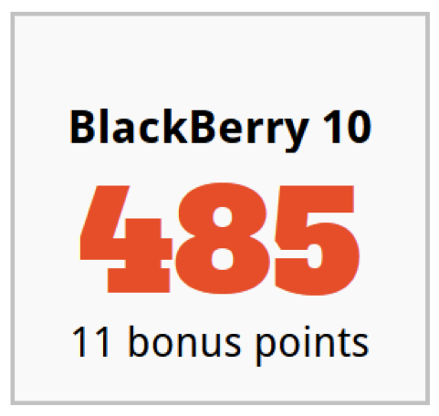
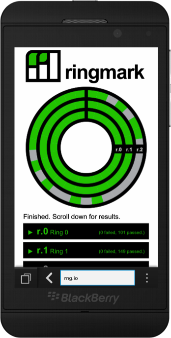
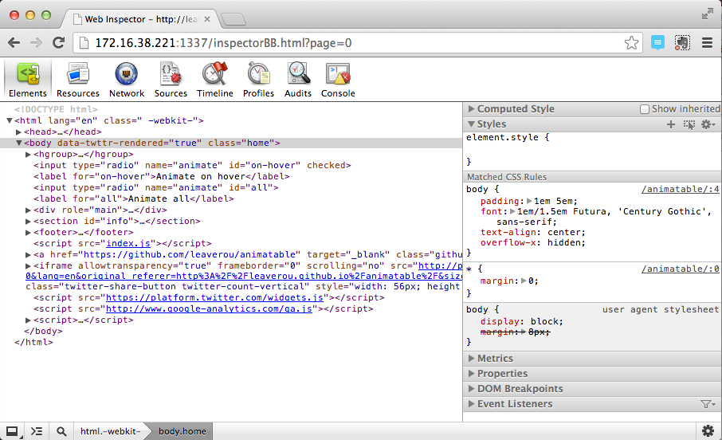

BlackBerry Loves the Web
PhoneGap Day US 2013
Ken Wallis / @ken_wallis
The Platform
HTML5Test

Ringmark

getUserMedia
WebGL
IndexedDB
...
Browser
The browser app is built in HTML5/CSS/JS
Remote Web Inspector

Apache Cordova
Center of gravity for cross-platform mobile application development
- BlackBerry has committers on the project
- BlackBerry 10 is a core platform
- Supported as of 2.3, rebuilt for 2.8
- BlackBerry specific Plugins
- Actively working on 3.0 (CLI & Plugman)
Call to action
It is time to start thinking beyond the Phone
New horizons for Apache Cordova
Many industries are looking at HTML5 as the platform of choice.
Many also want to develop an application ecosystem
QNX Car
Working on QNX Car as a supported platform within Apache Cordova